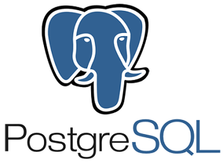

Desarrollo de aplicaciones web para impulsar tu negocio
Deseas convertir tu negocio en digital y no sabes como?
No te preocupes... Nosotros te ayudamos. codigo limpio, puro, y eficaz.
lenguaje de etiquetas moderno y hojas de estilo sofistificado
El lenguaje html (hypertext markup language) se utiliza para el desarrollo y creación de páginas web. Se compone de una serie de etiquetas que el navegador interpreta.
CSS (en inglés Cascading Style Sheets) es lo que se denomina lenguaje de hojas de estilo en cascada y se usa para estilizar elementos escritos en un lenguaje de marcado como HTML. CSS separa el contenido de la representación visual del sitio

cada dia inovando las paginas en php para asegurar su eficacia
PHP es un lenguaje de código abierto muy popular, adecuado para desarrollo web y que puede ser incrustado en HTML. Es popular porque un gran número de páginas y portales web están creadas con PHP. Código abierto significa que es de uso libre y gratuito para todos los programadores que quieran usarlo. Incrustado en HTML significa que en un mismo archivo vamos a poder combinar código PHP con código HTML, siguiendo unas reglas.
aplicaciones basadas en lenguaje java
Java es un lenguaje de programación y una plataforma informática comercializada por primera vez en 1995 por Sun Microsystems. Hay muchas aplicaciones y sitios web que no funcionarán a menos que tenga Java instalado y cada día se crean más. Java es rápido, seguro y fiable. Desde portátiles hasta centros de datos, desde consolas para juegos hasta súper computadoras, desde teléfonos móviles hasta Internet, Java está en todas partes.

lo ultimo en inovacion y moderno, el lenguaje python es tu mejor opcion
Python es un lenguaje de scripting independiente de plataforma y orientado a objetos, preparado para realizar cualquier tipo de programa, desde aplicaciones Windows a servidores de red o incluso, páginas web

necesitas agregar una base de datos a tu pagina web?
Una base de datos es un conjunto de datos pertenecientes a un mismo contexto y almacenados sistemáticamente para su posterior uso. En este sentido; una biblioteca puede considerarse una base de datos compuesta en su mayoría por documentos y textos impresos en papel e indexados para su consulta.
base de datos mysql
MySQL es el sistema de gestión de bases de datos relacional más extendido en la actualidad al estar basada en código abierto.

base de datos sqlserver
Microsoft SQL Server es un sistema de gestión de bases de datos relacionales (RDBMS) que admite una amplia variedad de aplicaciones de procesamiento de transacciones, inteligencia empresarial y análisis en entornos informáticos corporativos

base de datos maria db
MariaDB es un sistema de gestión de bases de datos que está muy relacionado con MySQL. El sistema de gestión de bases de datos MariaDB incorpora las distintas funciones características de MySQL añadiendo algunas mejoras, como la posibilidad de ejecutar consultas complejas y almacenarlas directamente en caché

base de datos postgresql
PostgreSQL, o simplemente Postgres para darle un nombre más pintoresco, es un sistema de código abierto de administración de bases de datos del tipo relacional, aunque también es posible ejecutar consultas que sean no relaciones. En este sistema, las consultas relacionales se basan en SQL, mientras que las no relacionales hacen uso de JSON
base de datos mongodb lo ultimo en que las empresas estan migrando por su tecnologia e inovacion
MongoDB es una base de datos de documentos que ofrece una gran escalabilidad y flexibilidad, y un modelo de consultas e indexación avanzado.